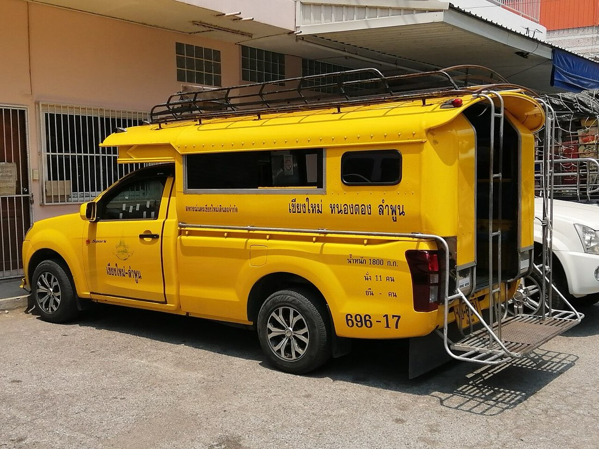

📷 Patiparn.Nice2002bkkรถ-เดินทาง · Getting Around (406)
🚌 เส้นทางรถเมล์ รถไฟ รถแดง แท็กซี่ และเที่ยวบิน รวมไว้ที่เดียว · Bus routes, trains, red trucks, taxi ranks and who flies here — one page เปิดหน้ารถ-เดินทาง · Open the transport board
เช่ารถ-มอเตอร์ไซค์ · Car & Bike Rental (37) · จักรยาน-เช่า-ซ่อม · Bicycles — Shops, Rental & Repair (41) · ร้านมอเตอร์ไซค์-โชว์รูม · Motorbike Dealers (84) · สถานีรถไฟ · Train Stations (3) · สถานีขนส่ง-ท่ารถ · Bus Terminals (17) · รถแดง-สองแถว · Rot Daeng & Songthaew (13) · แท็กซี่-คิวรถ · Taxi Ranks (4) · รถรางขึ้นดอย · The Doi Suthep Funicular (2) · ท่าเรือ · Piers & Boat Landings (1) · สนามบิน · Airports (2) · ปั๊มน้ำมัน · Fuel Stations (202)
— ผู้สนับสนุน · sponsor —Skip DJT — บินฟลอริดาให้ถูกลง เทียบสนามบินก่อนจอง · Skip DJT — fly Florida for less: compare the airports before you bookลงโฆษณาที่นี่ · advertise here
- ที่ตั้งหนึ่งแห่ง · one place
- รายการที่ข้อมูลครบ · most complete listings
- คูเมือง · the moat
- ประตู · แจ่ง · gate / corner
- 888 ไบค์ · 888 Bike🐜3
- 99 Motorbike rental🐜1
- Anek Bike🐜2
- Arm Bikes🐜1
- Avis🐜2
- Avis🐜2
- BIKE EXPRESS🐜1
- BNS Speed🐜1
- BUNNY MOTORBIKE & SCOOTER RENTAL - รถเช่าเชียงใหม่🐜3
- Bamboo Bike Rentals🐜4
- Barcelona Auto BMW🐜1
- Bee Bike Shop🐜2
- เบเนลลึ่ เชียงใหม่ · Benelli Chiang Mai🐜2
- Best Big Bike🐜3
- Bicycle Addict🐜2
- Bicycle Rent🐜1
- Bicycle repair and maintenance🐜1
- Big Jump Travel🐜2
- Bike🐜1
- Bike Corner🐜3
- Bike Me Up🐜1
- Bikky🐜3
- Britbike🐜3
- Buddy Rent & Internet🐜1
- Budget🐜1
- Budget🐜2
- Budget🐜1
- Budget Car Rental🐜1
- Budget Catcher🐜1
- Bus stop from Changmai to DoiTao&BoLuang🐜1
- Bus stop to Chiangmai🐜1
- Buzzy Bee Bike🐜4
- C H M Fuel🐜1
- C&P Big Bike🐜3
- Cacti Bikes🐜1
- Castrol Bike Point🐜1
- Cat Motors Motorbike & Scooter Rental🐜3
- Cat Motors Motorbike & Scooter Rental🐜4
- Cat Motors Motorbike Rental🐜3
- Chang Moto🐜3
- Chang Phuak Bus Station🐜1
- Chat Car Rental🐜1
- Cherry Bike🐜1
- Chiang Dao Bus Station🐜1
- Chiang Mai Bike Shop🐜1
- Chiang Mai Mountain Biking & Kayaks🐜1
- Chiang Mai Performance🐜1
- Chiang Mai-Thaton Bus Line🐜1
- Chiangmai Bike Gear🐜3
- CityGlide Scooter Rental🐜4
- Coin Operated🐜1
- Crown Carrent🐜1
- D2 Bike Nimman Motorcycle Rental🐜2
- Dang Bike Hire🐜1
- Dang Service🐜1
- Doi Suthep red bus station🐜1
- Donjai Fixed Gear Shop🐜1
- Drummed Fuel🐜1
- DART Motors🐜2
- Europcar🐜2
- Fang Bus Station🐜1
- Fuel Station🐜1
- PTT LPG (closed 2023)🐜1
- Fuel Station🐜1
- Fuel Station🐜1
- G3 Bike Shop🐜2
- Game's Bike🐜1
- Gentle Motorbikes🐜1
- Go motor home🐜1
- Grasshopper Adventures🐜3
- Happy Days Shop🐜1
- Helmet2Home🐜3
- Hertz🐜1
Honda (6)
- ยังไม่รู้ว่าอยู่ถนนไหน · road not known yet 6
- Honda🐜1
- สหพาณิช · Honda🐜2
- Honda🐜1
- Honda🐜1
- Honda BigWing Chiangmai🐜2
- แสงขัยพาณิชน์ · Sangchai Panich🐜4
- Honda & Suzuki Shop🐜1
- Honda Shop🐜2
- Infinity Motor Bike Rental🐜1
- JP Motor (Motorcycles & Rental)🐜1
- Jacky Bike🐜1
- Joe's Bike Team & Goodwill M/C Hire🐜2
- KPD🐜2
- KPD🐜1
- Kawasaki Big Bikes Chiang Mai🐜2
- Keng Engine🐜2
- Kwan Fabrication🐜1
- LA Bicycle🐜2
- LA Bicycle🐜1
- LPG Station🐜1
- LPG shop🐜2
- LPG station🐜1
- Lek's Bicycle Parts🐜2
- Lucky Bike Rental🐜3
- M25 Motorbike Rent🐜1
- MP Petroleum🐜1
- MX Moto Shop🐜1
- Mae Ping Car Rent & Travel🐜2
- Mae Rim Car Rent Taxi Service🐜1
- Mae malai busstop to chiang dao fang🐜1
- Mango Bikes Rent🐜4
- Master Car Rental🐜1
- Maxx Scooter🐜2
- Minibus to ChiangMai(from ChiangMai)🐜1
- Minibus to go to ChiangMai 140B🐜1
- Mix Bike Service🐜2
- Mix Motor Bike Shop🐜2
- Mojo Bikes🐜1
- Mong Bikes🐜1
- MotoPlus · MotoPlus bike repair🐜2
- Motorbike & car rent 080-2464381🐜1
- Mr Pop Chiang Mai🐜2
- Mr. Beer Bigbike🐜2
- Mr. Mechanics Motorbike and Car Rental🐜1
- Next-Gen Powder Coat🐜2
- Harley parts🐜1
- POP🐜1
- POP Motorcycle Rental🐜2
- POP Rent a Car🐜1
- PTT LPG Station🐜1
- Pack Superbike🐜2
- Petrol & LPG Station🐜1
- Piston Shop M/C🐜2
- Prempracha🐜1
- Railway X Garage🐜1
- Red Oil🐜2
- Red Road🐜2
- Repair shop🐜1
- Richco Motor Sports🐜3
- Riders Care🐜2
- Rollya Bike Shop - only bmx🐜1
- Royal Enfield🐜2
- Ruamchok Bike Market🐜1
- Smile - Motorbike rental🐜1
- Solar Pump🐜2
- Solar Pump🐜2
- สมบูรณ์รถจักรยานยนต์ให้เช่าและขาย · Somboon Motorcycle Rental & Sales🐜6
- Sompong Charoen Yon🐜2
- Songtaew Stop To ChiangMai🐜1
- Songthaew Station🐜1
- Songthaew Stop to Samoeng🐜1
- Songthaew stop from ChangPhuak terminal to Wiang PaPao🐜1
- Songthaew stop from Chiangmai to Samoeng🐜1
- Songthaew stop from DoiSakhet to Waroros Market🐜1
- Songthaew stop to go to Bo Luang🐜1
- Suzuki Big Bike🐜2
- Swiss Bike Camp🐜2
- TNT Motors🐜3
- Taxi Meter🐜1
- Taxi Meter🐜1
- Thai Rent A Car🐜1
- The Schweine Garage🐜2
- Tire Tech🐜2
- Tium Moto Work🐜2
- Tommo's Bike Shop🐜1
- Toon's Bike Rental🐜3
- Triumph Chiang Mai🐜2
- Two Revolutions🐜3
- Velocity🐜1
- White or silver Songtaews to Doi Pui Tribal Village🐜1
Yamaha (11)
- ยังไม่รู้ว่าอยู่ถนนไหน · road not known yet 11
- Yamaha🐜1
- Yamaha🐜1
- Yamaha🐜1
- Yamaha🐜1
- Yamaha🐜1
- Yamaha🐜1
- Yamaha🐜1
- Yamaha Square🐜2
- Yamaha🐜1
- Yamaha Square🐜2
- ศูนย์อบรมเทคนิคยามาฮ่า · Abrom Theknik Yam Ha Centre🐜1
- Yellow Bus🐜1
- Yellow Songthaew stop to BoKaeo & Chiang Mai🐜1
- Yellow minibus to Chiang Mai🐜1
- Yesaway🐜1
- ZeroMet, The World of Helmet🐜4
- amigos mexican bistro🐜2
- iBike🐜1
- orange songthaew go to ChiangMai🐜1
- songtaew for Chiang Mai or Thaton🐜1
- yellow songthaew go to thaton🐜1
- yellow songthaew to Tha Ton🐜1
- กู้ชีพพระธาตุดอยสุเทพ · Ku Chip Phra That Doi Suthep🐜1
คาลเท็กซ์ · Caltex (7)
- ถนนมหิดล 1
- คาลเท็กซ์ · Caltex🐜3
- ยังไม่รู้ว่าอยู่ถนนไหน · road not known yet 6
- คาลเท็กซ์ · Caltex🐜3
- Caltex🐜1
- Caltex🐜1
- คาลเท็กซ์ · Caltex🐜3
- คาลเท็กซ์ · Caltex🐜2
- คาลเท็กซ์ · Caltex🐜3
- คิวรถขึ้น ภูพิงค์ ดอยปุย ขุนช่างเคี่ยนเชียงใหม่ · Mini Taxi🐜3
- จีงไบซิเคิล · Jing Bicycles🐜2
- ดอยสะเก็ดไบซิเคิล · Doi Saket Bicycles🐜3
- ท่าอากาศยานนานาชาติเชียงใหม่ · Chiang Mai International Airport🐜5
- ท่าอากาศยานนานาชาติเชียงใหม่ · Chiang Mai International Airport🐜2
- ท่าเรือ ท่าตอน · Boat Landing Thaton🐜2
- นครชัยแอร์ · Nakhonchai Air🐜2
- นอร์ทเทิร์นออยล์ · Northern Oil🐜2
- นัติมอเตอร์ · Nat Motor🐜4
- บริษัท ต. แก๊ซ จำกัด · T Gas🐜2
- บริษัท นิยมพาณิชย์ · Niyom Phanit🐜2
- บริษัท สหพานิช จำกัด · Saha Phanit Chamkat Company🐜1
บางจาก · Bangchak (52)
- ถนนคชสาร ซอย 4 1
- Bangchak🐜1
- ถนนช่างหล่อ 1
- บางจาก · Bangchak🐜4
- ถนนท้ายวัง 1
- Bangchak🐜1
- ถนนมหิดล 1
- บางจาก · Bangchak🐜4
- ถนนลำพูน ซอย8 1
- Bangchak🐜1
- ถนนเชียงใหม่-หางดง 1
- บางจาก · Bangchak🐜3
- ยังไม่รู้ว่าอยู่ถนนไหน · road not known yet 46
- Bangchak🐜1
- Bangchak🐜1
- บางจาก · Bangchak🐜2
- บางจาก · Bangchak🐜2
- Bangchak🐜1
- Bangchak🐜1
- บางจาก · Bangchak🐜2
- บางจาก · Bangchak🐜2
- บางจาก · Bangchak🐜2
- บางจาก · Bangchak🐜2
- บางจาก · Bangchak🐜2
- บางจาก · Bangchak🐜2
- บางจาก · Bangchak🐜2
- บางจาก · Bangchak🐜2
- Bangchak🐜1
- บางจาก · Bangchak🐜2
- Bangchak🐜1
- บางจาก · Bangchak🐜2
- บางจาก · Bangchak🐜2
- บางจาก · Bangchak🐜2
- LPG Station🐜1
- บางจาก · Bangchak🐜2
- บางจาก · Bangchak🐜4
- บางจาก · Bangchak🐜4
- บางจาก · Bangchak🐜2
- บางจาก · Bangchak🐜2
- บางจาก · Bangchak🐜2
- บางจาก · Bangchak🐜2
- บางจาก · Bangchak🐜4
- บางจาก · Bangchak🐜2
- บางจาก · Bangchak🐜2
- บางจาก · Bangchak🐜2
- บางจาก · Bangchak🐜2
- บางจาก · Bangchak🐜2
- บางจาก · Bangchak🐜4
- บางจาก · Bangchak🐜5
- บางจาก · Bangchak🐜4
- บางจาก · Bangchak🐜4
- บางจาก · Bangchak🐜2
- บางจาก · Bangchak🐜4
- บางจาก · Bangchak🐜2
- บางจาก · Bangchak🐜3
- บางจาก · Bangchak🐜4
- บางจาก · Bangchak🐜4
- บางจาก · Bangchak🐜4
- บางจาก · Bangchak🐜2
- บุญลือพานิช · Bun Lue Phanit🐜1
ป.ต.ท. · PTT (49)
- ถนนมณีนพรัตน์ ซอย 2 1
- ปตท · PTT🐜2
- ถนนวังสิงห์คำ ซอย 1 1
- ป.ต.ท. · PTT🐜3
- ถนนเชียงใหม่-ลำพูน 1
- ปตท · PTT🐜2
- ถนนเชียงใหม่-หางดง 1
- ปตท · PTT🐜2
- ยังไม่รู้ว่าอยู่ถนนไหน · road not known yet 45
- ปตท · PTT🐜3
- ปตท · PTT🐜2
- ป.ต.ท. · PTT🐜2
- ปตท · PTT🐜2
- ปตท · PTT🐜2
- ปตท · PTT🐜3
- PTT🐜1
- ปตท · PTT🐜3
- ปตท · PTT NGV🐜3
- ปตท · PTT🐜2
- ป.ต.ท. · PTT🐜2
- ปตท · PTT🐜2
- ปตท · PTT🐜2
- ปตท · PTT🐜2
- ปตท · PTT🐜3
- PTT🐜1
- ปตท · PTT🐜2
- ปตท · PTT🐜3
- ปตท · PTT🐜2
- ปตท · PTT🐜2
- ปตท · PTT🐜2
- ปตท · PTT🐜3
- ปตท · PTT🐜2
- ป.ต.ท. · PTT🐜2
- ปตท · PTT🐜2
- ป.ต.ท. · PTT🐜2
- ป.ต.ท. · PTT🐜2
- ป.ต.ท. · PTT🐜2
- ป.ต.ท. · PTT🐜2
- ปตท · PTT🐜2
- ปตท · PTT🐜2
- ปตท · PTT🐜2
- ป.ต.ท. · PTT🐜2
- ปตท · PTT🐜3
- PTT🐜1
- ปตท · PTT🐜2
- ปตท · PTT🐜3
- ปตท · PTT🐜2
- PTT LPG Station🐜1
- ป.ต.ท. · PTT🐜3
- ป.ต.ท. · PTT🐜2
- ป.ต.ท. · PTT🐜2
- ปตท · PTT🐜3
- ปตท · Patot🐜1
- ปตท · PTT🐜2
- ปาล์ม ไบค์ · Palm Bike🐜2
- ป่าเส้า · Pa Sao🐜2
พีที · PT (37)
- ถนนเชียงใหม่-พร้าว 1
- PT🐜1
- ถนนโชตนา 1
- PT🐜3
- บ้านแม่ข่าน้อย ไข่มุก ซอย ๒ 1
- PT🐜1
- รอบเมืองเชียงใหม่ 1
- PT🐜1
- ยังไม่รู้ว่าอยู่ถนนไหน · road not known yet 33
- พีที · PT🐜2
- PT🐜1
- พีที · PT🐜2
- พีที · PT🐜2
- พีที · PT🐜2
- พีที · PT🐜2
- พีที · PT🐜2
- พีที · PT🐜2
- พีที · PT🐜2
- PT🐜1
- พีที · PT🐜2
- พีที · PT🐜2
- PT🐜1
- พีที · PT🐜2
- PT🐜1
- พีที · PT🐜2
- พีที · PT🐜2
- PT🐜1
- PT🐜1
- พีที · PT🐜2
- พีที · PT🐜2
- PT🐜1
- PT🐜1
- พีที · PT🐜2
- PT🐜1
- PT🐜1
- พีที · PT🐜2
- PT🐜1
- PT🐜1
- พีที · PT🐜2
- PT🐜1
- พีที · PT🐜2
- PT🐜1
- ร้านรุ่งเรืองอะไหล่ยนต์ · Castrol Bike Point🐜2
- ร้านเช่ารถ bikky🐜1
- วัดพระธาตุดอยสุเทพฯ · Wat Phrathat Doi Suthep🐜2
- วึ แก๊ส · V Gas🐜2
- ศรีวราลิสซิ่ง · Si Won Litsing🐜1
- ษาโมโต · SA Moto🐜2
- สถานีขนส่ง อาเขต (หมายเลข 2) · Chiang Mai Arcade Bus Terminal 2🐜2
- สถานีขนส่ง อาเขต (หมายเลข 3) · Chiang Mai Arcade Bus Terminal 3🐜2
- สถานีขนส่งอำเภอพร้าว · Phrao Bus Terminal🐜2
- สยามแก๊ส · Siam Gas🐜2
- สยามแก๊ส · Siam Gas🐜2
- สามแมวจักรยาน · Triple Cats Cycle🐜4
- สารภี · Saraphi🐜2
- สุชาติ เวสป้า · Suchart Vespa & Service🐜4
- สุชาติไบค์ · Suchati Bai🐜1
- สุวรรณา · Suwanna🐜2
- หจก. พีเค อีเลคทริค · PK Electric🐜2
- หจก.ธนพรโพธา · .thon Phon Photha Partnership🐜2
- หจก.อดุลย์มอเตอร์ (สำนักงานใหญ่) · .ot La Mote (Samnakngan Yai) Partnership🐜1
- เข้ามาเต๊อะไบด์ · Khao Ma Toebai🐜2
เชลล์ · Shell (13)
- ถนนห้วยแก้ว 1
- Shell ทองธนพล สาขาห้วยแก้ว · Shell Thongthanaphon - Huay Kaew🐜2
- ถนนเจริญเมือง 1
- Shell ทองธนพล สาขาเจริญเมือง · Shell Thongthanaphon - Charoen Muang🐜3
- ยังไม่รู้ว่าอยู่ถนนไหน · road not known yet 11
- เซลล์ · Shell🐜2
- เซลล์ · Shell🐜3
- เซลล์ · Shell🐜2
- เชลล์ · Shell🐜2
- เซลล์ · Shell🐜2
- Shell🐜1
- เซลล์ · Shell🐜4
- เชลล์ · Shell🐜3
- เชลล์ · Shell🐜2
- เชลล์ · Shell🐜3
- Shell ทองธนพล สาขาสนามบิน · Shell Thongthanaphon - Airport🐜2
- เชียงใหม่ · Chiang Mai🐜3
เวิลด์แก๊ส · World Gas (11)
- ยังไม่รู้ว่าอยู่ถนนไหน · road not known yet 11
- World Gas🐜1
- เวิลด์แก๊ส · World Gas🐜2
- เวิลด์แก๊ส · World Gas🐜2
- เวิลด์แก๊ส · World Gas🐜2
- เวิลด์แก๊ส · World Gas🐜2
- เวิลด์แก๊ส · World Gas🐜2
- เวิลด์แก๊ส · World Gas🐜3
- เวิลด์แก๊ส · World Gas🐜2
- เวิลด์แก๊ส · World Gas🐜2
- เวิลด์แก๊ส · World Gas🐜2
- แก๊สรถยนต์ รักชูก้า · Ratsugar LPG Station🐜3
- เอ็ม ออยส์ · YM Oil🐜2
- แก๊สรถยนต์ · Kaet Rotyon🐜2
- แก๊สราคากูก · Kaet Rakha Kuk (LPG)🐜2
- แม่ข่าพานิช · Maekha Bike Shop🐜2
- แม่ข่าพาร์ทเช็นเฅวร · Maekha Pha Thachenkheora🐜1
- แสงชัยธุรกิจยานยนต์ · Saeng Chai Thunkit Yan Yon🐜1
- 邻家客栈🐜1
⬇ GeoJSON (406 จุด · points)
{kind=link}